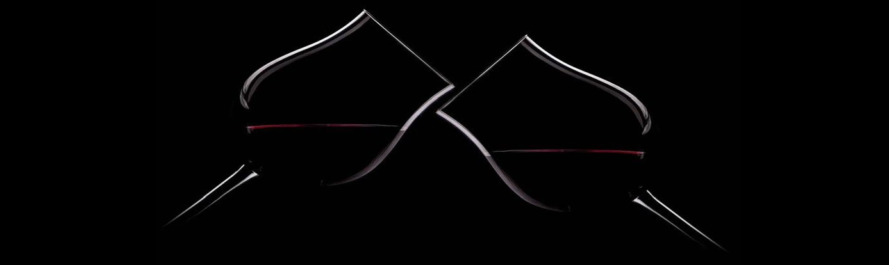

RESTAURANTE PUERTA GRANDE
|
Sumérgete en la tradición culinaria con nuestra variada selección de carnes, pescados y embutidos ibéricos, incluyendo el incomparable jamón de bellota. Descubre una bodega selecta que complementa a la perfección cada plato, todo enmarcado por la elegancia y calidez de nuestro acogedor restaurante situado en el vibrante centro de Madrid. |
|
El Restaurante Puerta Grande en Madrid es una referencia taurina en toda España. Situado en la Comunidad de Madrid y muy cerca de la Catedral Mundial de la Tauromaquia, la Plaza de Toros de Las Ventas. Único en su tipo y un lugar imperdible en Madrid, combina una gastronomía exquisita con reuniones taurinas, todo en un entorno decorativo propicio para el conocimiento del Arte del Toreo. * Solo es posible reservar el menú estrella. |
Tertulia Taurina en Restaurante Puerta Grande
Con la compañia de Diego Urdiales y organizado por la "Asociación El Toro de Madrid"
|
Conocidos por las numerosas actividades que organizamos relacionadas con el mundo del toro, como conferencias, exposiciones, reuniones con expertos en este arte, etc... Esta biblioteca ofrece un rincón para el arte de la Tauromaquia con: Venta de libros, exposiciones, información taurina semanal, acceso a revistas taurinas de peñas y asociaciones como: “Rastrillo” - Peña Taurina Arenero. “Los Sabios del Toreo”. “Asociación del Toro de Madrid”. Así mismo somos sede social de: · Peña taurina Areneros de Madrid. · Club Internacional Taurino. · Círculo Cultural Puerta Grande. |